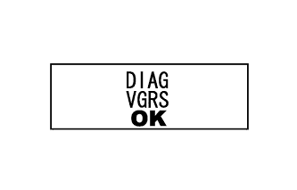
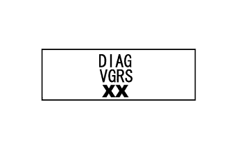

VARIABLE GEAR RATIO STEERING SYSTEM > DTC CHECK / CLEAR |
| CHECK DTC (Using Tester) |
Connect the intelligent tester to the DLC3.
Turn the engine switch on (IG).
Turn the tester on.
Enter the following menus: Chassis / VGRS / DTC.
Read the DTCs.
| CLEAR DTC (Using Tester) |
Connect the intelligent tester to the DLC3.
Turn the engine switch on (IG) (do not start the engine).
Turn the tester on.
Enter the following menus: Chassis / VGRS / DTC.
Clear the DTCs.
| CHECK DTC (Using SST Check Wire) |
 |
Using SST check wire, connect terminals 13 (TC) and 4 (CG) of the DLC3.
Turn the engine switch on (IG).
"DIAG VGRS" is displayed on the multi-information display and the system starts searching for a malfunction.
 |
If the system is normal, "DIAG VGRS OK" is displayed.
 |
If the system has a malfunction, "DIAG VGRS xx" is displayed ("xx" is a 2-digit DTC).
| CLEAR DTC (Using SST Check Wire) |
|
Turn the engine switch on (IG).
Using SST check wire, connect and disconnect terminals 13 (TC) and 4 (CG) of the DLC3 4 times within 8 seconds.
Disconnect SST check wire from the DLC3.
Turn the engine switch off.
Obtain the yaw rate and G sensor zero point (Click here).